$ whoami
nusgreyhats
$ cat readme.txt
Hello, Friend. ctf101 is an introductory workshop that teaches systems and web security from the perspective of a 'hacker'. Try your hand at pwning a system with our hands-on exercises!
$ stat ctf101.bin
This event is open to all students. You may register using this form. Lunch will be provided!
$ where ctf101
NUS, iCube Building, Auditorium, 21 Heng Mui Keng Terrace, Singapore 119613
$ date
20 & 21 August 2016
10am to 4pm on both days
$ id nusgreyhats
NUS Greyhats is a special interest group designed to spark students’ interest in information security and advance the level of security proficiency towards the aim of contributing to the growing need for cyber defenders in the government and private sectors.
You may e-mail us here.
$ display sponsor.png
